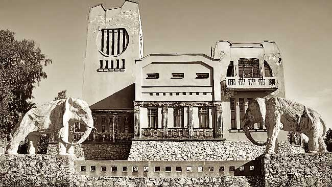

Интересные исторические факты о городе
Здание самарского вокзала – самая высокая постройка такого назначения в Европе (см. интересные факты о вокзалах). Самарская площадь Куйбышева является крупнейшей европейской площадью и седьмой по размеру в мире. Ее площадь составляет 174 000 квадратных метров. Все российские и советские космонавты отправлялись в космос благодаря ракетам, сконструированным в Самаре. К 2018 году РЖД планирует соединить Самару с Москвой скоростной железнодорожной веткой, поезда на которой будут разгоняться до 250 км/ч.

Одно из самых необычных зданий в Самаре – так называемая «Дача со слонами», построенная самарским купцом по его собственному проекту. С домом связано несколько городских легенд: о некой девушке, якобы покончившей с собой, а также о намерении взорвать скульптуры слонов в 30-е годы прошлого века. Жигулевский пивоваренный завод в Самаре, где изначально производилось одноименное пиво, является одним из старейших подобных предприятий в России. Его в 1881 году основал австрийский дворянин и меценат Альфред фон Вакано. В Самаре установлен единственный в России памятник кинорежиссеру Эльдару Рязанову, родившемуся в городе на Волге. Набережная Волги в Самаре – одна из длиннейших и красивейших набережных среди всех городов России. Под Самарой ежегодно проходит знаменитый Грушинский фестиваль, на который со всей страны съезжаются любители бардовской песни. Города-побратимы Самары – американский Сент-Луис, болгарский Стара-Загора и немецкий Штутгарт. В Самаре есть легенда, согласно которой молодая девушка Зоя «окаменела» во время танца с иконой Николая Чудотворца. Рассказывают, что пустившаяся в пляс девушка вдруг буквально приросла к полу – ее не удавалось сдвинуть с места или отобрать у нее икону, прижатую к груди. Зоя не подавала никаких признаков жизни, кроме сердцебиения, а врачи ничем не могли ей помочь, так как иглы ломались о ее кожу. Девушка якобы простояла на одном месте 128 дней, а затем умерла. Самарские священнослужители утверждают, что такой случай действительно произошел в городе в 1956 году.
В Самаре есть множество легенд о тоннелях и переходах под городом. Согласно одной из них, из областного центра под Волгой было проложены несколько ходов, по которым можно попасть на другую сторону реки. Фантаст Сергей Палий опубликовал роман «Безымянка» о Самаре после глобальной катастрофы. Памятная табличка в честь этого произведения висит на одноименной станции самарского метро. На гербе Самары изображена белая коза. В 19 веке в Самаре была открыта первая в мире лечебница, где больных чахоткой лечили при помощи кумыса.
Достопримечательности Самары
Самарская набережная
Самарская набережная - настоящее украшение города. Это любимое место отдыха и прогулок самарцев и туристов. Сюда приходят полюбоваться на яркие закаты, сфотографироваться у необычных скульптур, послушать уличных музыкантов, покататься на велосипедах вдоль реки.
Площадь Куйбышева
Площадь Куйбышева в Самаре - самая большая в Европе. Это место проведения всех городских праздников, парадов и демонстраций. Здесь стоит памятник Валериану Куйбышеву и Самарский академический театр оперы и балета. Со всех сторон площадь окружают зеленые скверы.
Самарский академический театр оперы и балета
Здание в стиле сталинского ампира, расположенное главной площади города, - Самарский академический театр оперы и балета. Помимо классической программы, в театре проходят крупные международные фестивали музыки и танца.
Площадь Славы
Площадь Славы - пожалуй, самое узнаваемое место в городе. Ее украшает 40-метровый монумент с фигурой рабочего, который поднимает на руках крылья. Рядом работает 30-струйный фонтан в виде георгиевской ленты. За монументом оборудовали смотровую площадку, с который открываются живописные панорамные виды Волги.
Самарские военные погибли в Макеевке. Всё, что известно о трагедии.
2 января 2023 года стало официально известно о погибших и раненых военных из Самарской области, которые находились в пункте временной дислокации в Макеевке под Донецком. По нему ударили системами залпового огня HIMARS. Мы следим за событиями вокруг этой трагедии в режиме онлайн и собираем всю официальную информацию.
Под ударом вражеских сил оказались в том числе и наши земляки. Есть раненые, увы, есть погибшие. В данный момент сведения уточняются. Понимаю, что сейчас многие волнуются, хотят больше узнать о своих близких. К сожалению, в социальных сетях много неверной, зачастую фейковой информации. Напоминаю, что для уточнения сведений необходимо обратиться в военкомат по месту призыва военнослужащего, оттуда также направят запрос по линии МО РФ. Также у нас продолжает работать call-центр 122. Нахожусь на постоянной связи с Минобороны, руководством всех обеспечивающих служб. Обязательно окажем всестороннюю помощь в лечении раненых. Семьи военнослужащих могут рассчитывать на нашу всемерную поддержку.
Под ударом вражеских сил оказались в том числе и наши земляки. Есть раненые, увы, есть погибшие. В данный момент сведения уточняются. Понимаю, что сейчас многие волнуются, хотят больше узнать о своих близких. К сожалению, в социальных сетях много неверной, зачастую фейковой информации. Напоминаю, что для уточнения сведений необходимо обратиться в военкомат по месту призыва военнослужащего, оттуда также направят запрос по линии МО РФ. Также у нас продолжает работать call-центр 122. Нахожусь на постоянной связи с Минобороны, руководством всех обеспечивающих служб. Обязательно окажем всестороннюю помощь в лечении раненых. Семьи военнослужащих могут рассчитывать на нашу всемерную поддержку.
В Самарской области в 6 января коронавирус подтвердился еще у 102 человек
Еще 102 человека в Самарской области заразились коронавирусом. 25 пациентов пришлось госпитализировать. К счастью, новых летальных случаев не зафиксировано. А 158 человек победили болезнь.
Таким образом, с начала пандемии в Самарской области:
Заболело 492 361 человек.Выздоровело 482 755 человек.
Скончалось 8 194 человека.
В России за сутки:
Заболело 3 439 человек (госпитализировано 673 человека).Выздоровело 4 685 человек.
Скончался 41 человек.
В целом по РФ с начала коронавирусной атаки:
Заболело 21 820 552 человекаВыздоровело 21 237 402 человека.
Скончалось 393 986 человек.
На здоровье самарцев, в том числе, влияет и погода. А она в ближайшее время обещает суровые испытания. В губернии сразу на несколько дней объявлен оранжевый уровень погодной опасности. Если уж избежать обморожения не удалось, то стоит действовать так, как рекомендуют эксперты. Также врачи рассказали, о каких недугах могут свидетельствовать холодные руки.